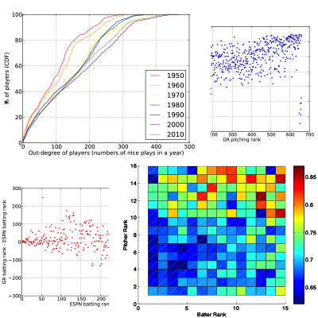
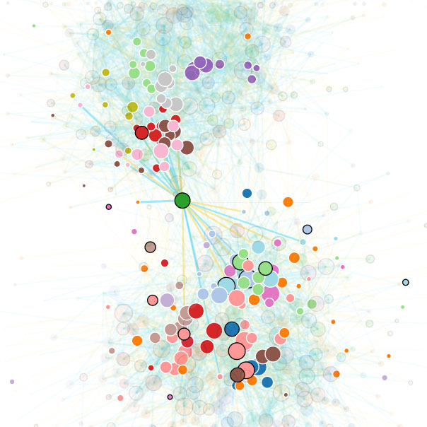

My Research
The explosion of data provides us computer scientists a unique opportunity for understanding the dynamics of the world --- knowledge that has the potential to impact society. I am intrigued by the union of data mining and information networks to answer fundamental questions: How do large networks evolve? How do we better understand large-scale human interactions? How are networks made robust to unexpected behavior?
I have explored some of these questions during my undergraduate studies. I led an independent research project to automatically rank players in a baseball network. In a series of studies, I investigated real-world phenomena using large-scale data provided by Renren, a massive Chinese social network. Specifically, I led a project devising defenses against profile-cloning attacks. I further collaborated on a separate study on Sybil-attack detection. Finally, I was involved in assessing the impact of user-interaction transparency on their behavior.
This semester, as an undergraduate research-exchange student at Technion, I am taking advanced graduate courses, engaging in academic life, and pursuing new research directions as part of a vibrant collaboration.
Ranking and analyzing baseball network


One topic that especially interests me is ranking and analyzing baseball networks. This was my course project for SI 508---Networks: Theory and Application, given by Prof. Qiaozhu Mei from UMich, in which I got an overall picture of network science including network models, metrics, evolution, diffusion, resilience, etc. The project originates from my idea to regard American Major League Baseball (MLB, of which I am a big fan) games as a network, with players as nodes and their win-lose conditions in games as links. I always enjoy to use real-world data, and felt it exciting to find online MLB game records and parse them into networks.
To rank the players in the network, we first tried PageRank, but it failed to describe a special attribute of the network: a pitcher who defeats good batters is a great pitcher, and a batter who wins skilled pitchers is an awesome batter. Faced with this obstacle, I used the intuition in HITS algorithm (with hubs and authorities) to modify PageRank, and raised a new random walk algorithm to measure the two abilities. Our next problem was to evaluate our algorithm, when there are no definite criteria to judge baseball rankings. Therefore I compared our results to a prestige ranking system named ESPN Ratings, and the plots show that we achieve similar results with ESPN while having a simpler model and a wider capability.
In the data-mining phase, I studied the network over time, and found interesting patterns that recent players are getting closer in their skills than before, and good pitchers are better than ordinary pitchers at batting.
In short, I enjoy this research because it involves understanding social networks, their evolution, and their application to human activities. As a future project, I might try to investigate heterogeneous baseball networks involving both players and teams as different types of nodes, to revise the ranking algorithm, explore their evolution, and test the robustness of each team based on data of in-team supports, to see whether the team is too dependent on certain players. Further research might lead to brand new strategies in real games.
Paper: [PDF]
Defending against cloning attacks in OSNs
My other independent research is about defending against cloning attacks in Online Social Networks (OSNs). Cloning attackers disguise fake accounts as existing users by copying their profiles, and send requests to the friends of the cloned victim. This project is motivated by my long time interest in making OSNs more robust, and by my coincidental encounter with a cloning attack while using Renren (a Facebook-style OSN in China). I conducted a literature search and found that although earlier studies described this attack pattern, it cannot be adopted for large-scale attacks, and they did not provide a method for defending against it. So I first improved the attack pattern by snowball sampling (adding cheated people's friend) and iteration attack (cloning cheated people's friend), to point out its potential threats. Secondly we tested its feasibility on Renren. Then I came up with a simple but powerful server-side defending system by IP sequence matching. I also notice that the defending strategy is fragile to IP spoofing, so in the future I'd like to study stronger metrics of account identity, like clicking pattern matching and action time similarity.
Paper: [PDF]
Slides: [PPTX]
Detecting Sybil groups in OSNs
My major research project advised by Professor Yafei Dai in her Lab is to detect Sybil Attack groups in OSNs. Sybil Attackers manipulate multiple accounts to increase the attacker's power. We aimed at detecting Sybil attacks in the wild, in cooperation with Renren---the "Facebook in China" with over 200 million users. I worked with Jing Jiang, a graduate student in our lab. Our paper is published in ICDCSW '12, and improved work submitted to TKDD. I like the project because of the chance to discover knowledge of human behaviors in the real-world large dataset, the focus on solving widespread security problems, and the analysis on network dynamics and communities. In the project, I have coded all the programs in all phases from scratch, implemented efficient algorithms to handle the graph with millions of nodes, and designed many measurements based on discussion with Jing.
One special experience to me is in the evaluation phase, where I raised and revised an indicator. We wanted to verify that the detected Sybil groups are controlled by attackers, which matches my interest in uncovering human behaviors behind the action pattern. We assumed that among users in a group, the more similar their "action times" are, the more likely they are manipulated. In order to quantify the "similarity" of time points inside a group, I raised a new method: I sorted all the points on the timeline, calculated the differences between adjacent points, and got the median of all those differences, which is M. However, I found that M was not a good indicator since it is correlated with the number of time points N, illustrated by the M-N log-log scatter diagram of random user groups. I explained this phenomenon by intuition: as the length of the timeline is limited, the more points there are, the more closely they are distributed onto the timeline, and the smaller M it has. So I used MN as the new indicator, and the diagram shows that the value is unrelated with N.
In the measurement phase, I mined the network and discovered lots of knowledge. Therein I enjoy the study of "group merging pattern", inspired by an interest on evolutions of real-world Sybil groups. I spotted that sometimes two connected components merge into one, and I wanted to compare the difference between Sybil groups and normal users in merging pattern. By making tables counting the size of two components when they merge, I found that in Sybil groups, "one-to-many merging" is the major pattern, and "many-to-many merging" is far rarer than in normal groups, which indicates that Sybil groups lack variety in merging pattern, with a majority of joining a new account into an existing component. The result improves my interest in network dynamics.
Paper: [PDF]
Assessing the Impact of User-interaction Transparency in Social Networks
I was involved in another project at lab, to understand latent user interactions, working with Jing Jiang advised by Professor Dai. In OSNs, profile browsing, which is latent to third-parties, are actually the most prevalent type of user interactions. Supported with the dataset provided by Renren, we compared this latent network with visible one of comments and retweets, based on the dataset provided by Renren. My work involved measuring structural properties including conductance, modularity and mixing time, for both visible and latent graphs. I enjoyed this research, in the process of understanding characteristics of different networks in the wild, and quantifying the human interactions. As a future question, it will be very attractive for me to compare the dynamics of latent and visible networks, especially their information diffusion, to discover how the hot topics and rumors spread among users.
Research Exchange Program at Technion
This semester, I join a research exchange program at Technion, advised by Professor Daniel Freedman. At Technion I am taking advanced graduate courses, including seminars in Reliable Distributed Computing by Prof. Idit Keidar, and Program Analysis and Synthesis by Prof. Eran Yahav. I am also engaging in academic activities at Technion, being exposed to lectures and colloquiums on a wide range of topics in Computer Science, given by international researchers. Most importantly, I am exploring new research directions as part of a vibrant group. Our topics span Programming Language, Systems, and Human Computer Interaction. We design description languages to automate the creation of both front-end and back-end systems, and discover human behavior patterns in interacting with services.
Future Research Topics
Other than the future work of my projects mentioned above, I am attracted to more questions on constructing networks out of mass data and discovering knowledge from them. Specifically, firstly I want to scrutinize the evolution, resilience and information diffusion for different OSNs, to improve their robustness, explore their dynamics and discover human behaviors. Therein I especially want to model how rumors and hot topics spread across the network, with the support of mining big data. How do the rumors spread in Facebook and Twitter respectively? What is the impact of their distinct nature of social links (undirected or directed), to their information diffusion? How to better model this propagation? What is the implication of this model to the design of instant rumor detecting systems? Besides, how do hot topics diffuse differently from rumors do? How to model the diffusion of hot topics? How do people increase their influence in networks, to easier raise hot topics?
Secondly, I want to combine network science with other disciplines to solve problems in different areas: product relationships in business, transportation organization in society, evil detection in criminology, and gene theory in biology. How to study the dependencies and centralities in a network of products of a company, to improve their marketing strategy? How to model a transportation network, in order to balance traffic for roads of high betweenness, and optimize traffic lights to increase network capacity according to specific cases of cities? How can we find conspiracy in criminal network based on its features like long average shortest path? Finally, How can we adapt network science, especially resilience theory, to human gene networks, and help humans against disease?